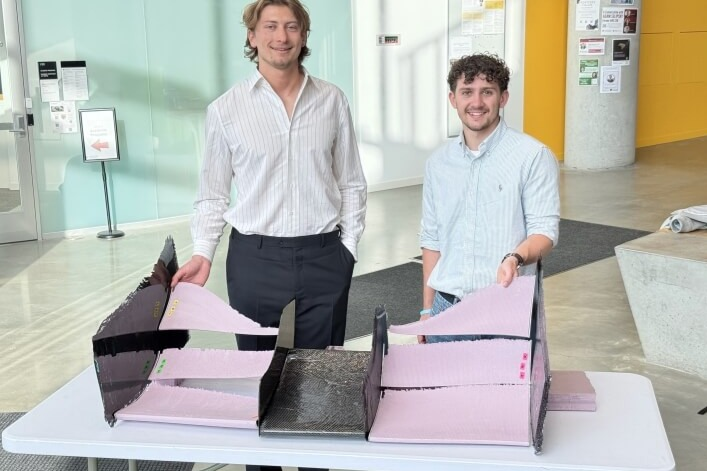
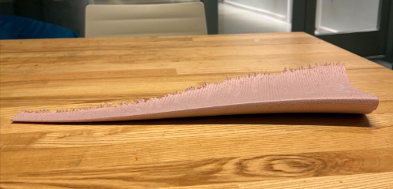
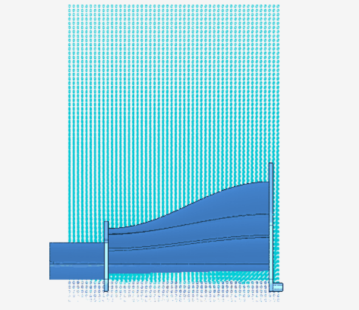
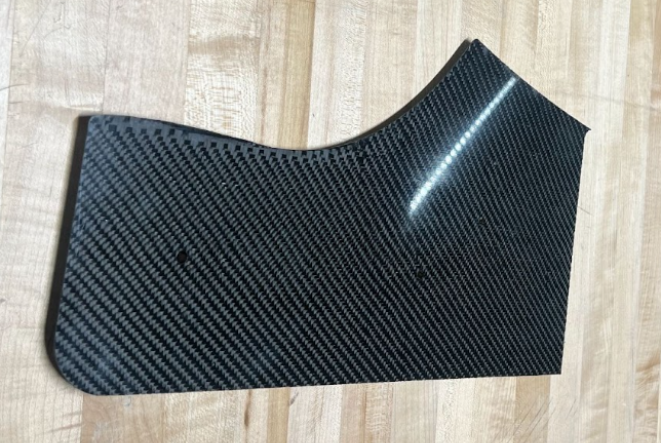

Project Overview
As Aerodynamics Co-Lead for Harvard's inaugural Formula SAE team (Crimson Motorsport), I led the design and development of the complete aerodynamic package for our first competitive race car. This senior capstone project represented the culmination of my mechanical engineering education and my passion for automotive performance.
The primary objective was to maximize downforce while minimizing drag, improving cornering speeds and overall handling stability for Formula SAE competition circuits, which typically feature tight turns and short straights.
Key Achievements
- Led aerodynamics team for Harvard's first-ever FSAE car
- Designed front and rear wing assemblies for maximum downforce
- Conducted CFD simulations to optimize aerodynamic performance
- Improved cornering performance through ground effect design
- Collaborated with chassis, powertrain, and suspension teams
Technical Approach
The aerodynamic design process began with extensive research into FSAE rules and regulations, followed by computational fluid dynamics (CFD) analysis using SimScale and ANSYS Fluent. I developed multi-element wing profiles that conformed to FSAE constraints while generating significant negative lift coefficients.
Key design considerations included:
Front Wing Design: Created a split front wing configuration with adjustable angle of attack to balance front-end downforce and manage airflow to the underbody and radiators.
Rear Wing Assembly: Designed a multi-element rear wing with endplates to maximize downforce generation while maintaining aerodynamic balance with the front wing.
Underbody Aerodynamics: Worked with the chassis team to implement diffuser geometry and floor design to exploit ground effect principles.
Results & Impact
The aerodynamic package successfully improved the car's cornering performance and handling stability. CFD simulations indicated significant downforce generation across the operational speed range of FSAE competition.
This project laid the foundation for Harvard's continued participation in Formula SAE and established design methodologies that future teams can build upon. The experience taught me valuable lessons about systems integration, team leadership, and the iterative nature of engineering design.
Gallery









Thesis Presentation
Full aerodynamics design report submitted as part of the Harvard senior capstone.
Open full screen